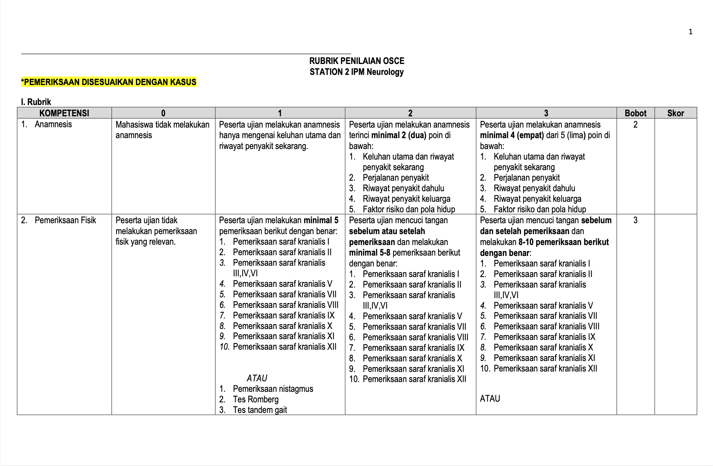
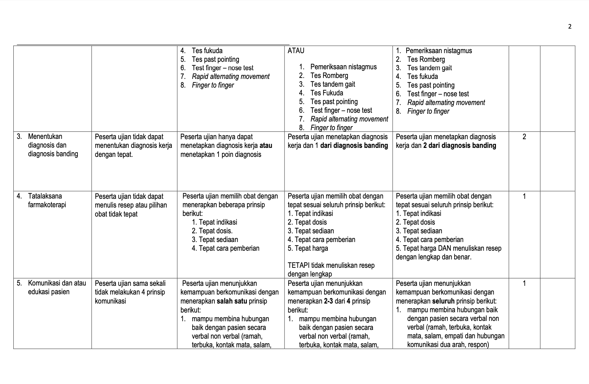
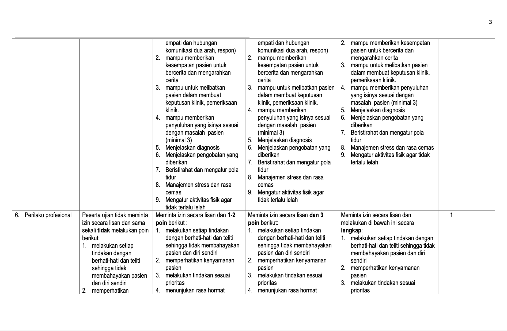
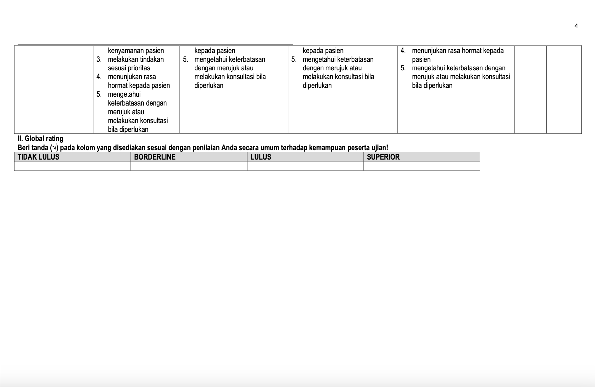

Kasus OSCE Fase 2: TIA
Penurunan aliran darah yang berlangsung sepintas ke area tertentu otak, mengakibatkan disfungsi neurologis singkat.
Kasus OSCE Fase 2: TIA
Checklist OSCE




Transient Ischemic Attack / TIA (3B)
Penurunan aliran darah yang berlangsung sepintas (tidak menetap atau tidak permanen) ke area tertentu dari otak, sehingga mengakibatkan disfungsi neurologis singkat.
1. Anamnesis
Komponen Anamnesis
- Keluhan utama dan riwayat penyakit sekarang
- Perjalanan penyakit
- Riwayat penyakit dahulu
- Riwayat penyakit keluarga
- Faktor risiko dan pola hidup
Hasil Anamnesis
- Kelemahan salah satu sisi wajah, lengan, dan tungkai
- Gangguan sensorik salah satu sisi wajah, lengan, dan tungkai
- Gangguan bicara
- Gangguan berbahasa
- Gangguan neurologik lainnya (jalan sempoyongan, rasa berputar, kesulitan menelan, dll.)
- Gangguan terjadi mendadak dan biasanya berlangsung dalam waktu singkat (beberapa menit), jarang sampai lebih dari 1–2 jam, diikuti kesembuhan total tanpa gejala sisa
2. Persiapan
- Pasien: Posisikan pasien dengan nyaman
- Alat: Stetoskop, Tensimeter, Palu refleks, Penlight, Kapas dan jarum sensorik, Alcuta
- Diri: Mencuci tangan 6 langkah WHO
3. Pemeriksaan
- TTV — Hasil: Tekanan darah meningkat/hipertensi; Nadi dapat tidak teratur bila terdapat fibrilasi atrium
- KU — Hasil: GCS menurun
- Pemeriksaan Saraf Kranialis I–XII (atau: Pemeriksaan nistagmus, Tes Romberg, Tes tandem gait, Tes Fukuda, Tes past pointing, Finger–nose test, Rapid alternating movement, Finger to finger)
- Pemeriksaan Sensoris — Hasil: Penurunan sensoris unilateral pada wajah, lengan, atau tungkai; Penurunan sensasi raba, nyeri, atau proprioseptif
- Pemeriksaan Motorik: Kekuatan dan Tonus Otot — Hasil: Hemiparesis/kelemahan unilateral; Tonus otot meningkat (spastisitas); Klonus dapat ditemukan; Kekuatan otot menurun pada ekstremitas yang terkena
- Pemeriksaan Refleks Fisiologis dan Patologis — Hasil: Hiperrefleksia; Refleks patologis positif (Babinski positif)
4. Pemeriksaan Penunjang
- CT Scan Kepala — Hasil: Hyperdense = stroke hemoragik; Hypodense = stroke iskemik
- MRI Otak dengan Diffusion-Weighted Imaging (DWI) — Gold Standard: Lebih sensitif mendeteksi infark kecil pada TIA atau stroke iskemik dini dibanding CT Scan.
- EKG — Hasil: Dapat menunjukkan fibrilasi atrium (sawtooth pattern)
- CT Angiography (CTA) — Hasil: Dapat ditemukan stenosis atau aterosklerosis arteri karotis dan serebral
5. Diagnosis Banding
Cedera otak traumatik (hematoma epidural/subdural), tumor otak, infeksi otak (abses, tuberkuloma), Todd’s paralysis (hemiparesis pasca serangan kejang), gangguan metabolik (hipo/hiperglikemia).
6. Tatalaksana dan Farmakoterapi
Menilai skor ABCD2 — bila skor > 5 maka pasien harus segera mendapat penanganan seperti pasien stroke iskemik akut.
Resep
R/ tab aspirin 80 mg no II S.haust, CITO R/ inj alteplase 50 mg amp no I S.i.m.m. (jika perlu) R/ inf alteplase 50 mg amp no I S.i.m.m. (jika perlu)
7. Edukasi
- Edukasi pasien dan keluarga agar tidak terjadi kekambuhan/serangan stroke ulang
- Jika terjadi serangan stroke ulang, harus segera mendapat pertolongan segera
- Mengawasi agar pasien teratur minum obat
- Membantu pasien menghindari faktor risiko